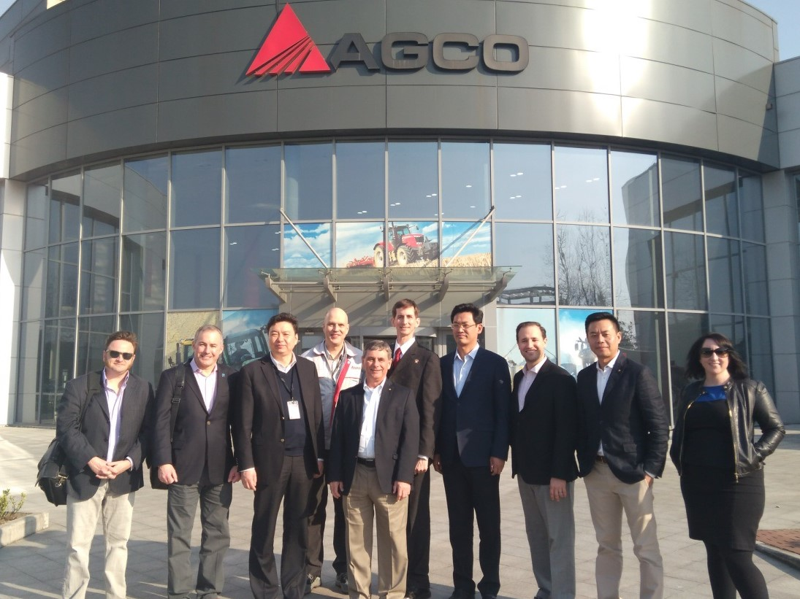
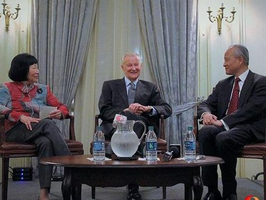
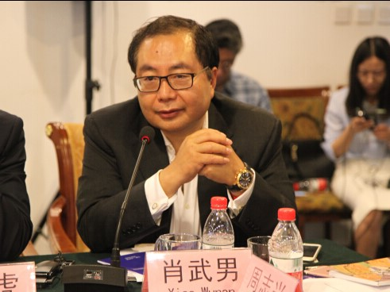

Recent Activities

A Conversation Between Sino-Japanese Scholars: Conference on the Korean Peninsula’s Nuclear Threat
The U.S. - China New Perspectives Foundation and the Sasakawa Japan-China Friendship Fund hosted a Sino-Japanese Scholar Conversation Event

Mayor’s Delegation
From March 11 – 17, 2017, the U.S. - China New Perspectives Foundation and the Tai Initiative jointly held a U.S. Mayor’s Delegation to China event.

Documentary "Mr. Deng Goes to Washington" Screening in Washington D.C.
On November 16, 2016, the screening of documentary Mr. Deng Goes to Washington was held at the Meridian House in Washington D.C.

The Third U.S. - China Counterterrorism Conference
Since 2014, the U.S. - China New Perspectives Foundation has held the Sino - U.S. International High-Level Counterterrorism Conference at the Beijing